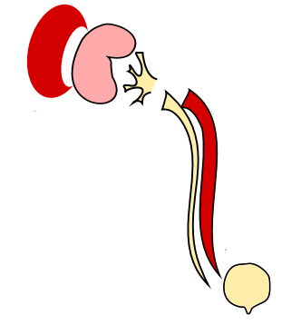

Remember to read the
README
Not Loaded!
Patient identifier:
First name:
Name:
Date of birth:
Image:
Urinary System 1
Urinary Tract (Test)
Urinary System 3
Rectangle
Submit
Download as PDF
Json:
Yaml:
SVG:
Image2PDF (TEST): 
QRCode: